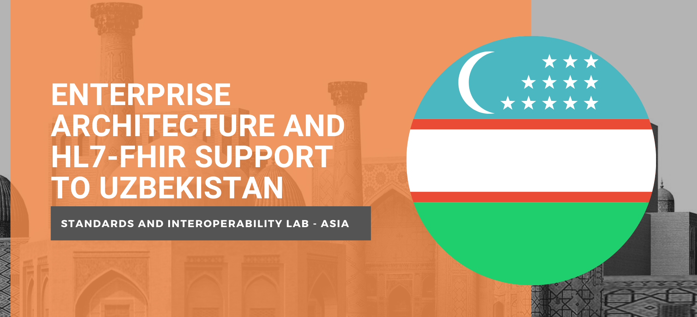

Rationale
HL7 FHIR is the leading standard in healthcare today. It is used by hospitals in connecting various hospital-based information systems like patient management systems, laboratory information systems, financial and billing systems or pharmacy information systems. Countries around the world are adopting HL7 FHIR via profile/standards localization. This is done by developing national HL7 FHIR profiles. Common use cases for HL7 FHIR use nationally are national disease surveillance registries and centralized shared health records. Leading IT companies have set up their own HL7 FHIR servers to serve as a platform for sharing of personal health data to personal health records, wearables and electronic medical records (EMR).
The adoption of HL7 FHIR has been fast since it is based on commonly used web technologies like REST APIs. APIs, or Application Programming Interface is a method that allows the sharing of data between applications, without the need to do extensive modifications. A service provider (the one where the data will come from), will just need to allow others to access its APIs, and let the other applications do their own processing of the data. At the same time, the service consumer would just need to use the API, without the need of knowing how the service provider stores it inside its own system.
The Asian Development Bank (ADB), through the Standards and Interoperability Lab – Asia (SIL-Asia) has been providing technical support to countries in adopting HL7 FHIR. The ADB recognizes the importance of Digital Health as a part of the overall health systems strengthening assistance it provides to countries. In order to further harness the benefits of using digital health, the ADB also helps countries in adopting, implementing, deploying standards–based solutions.
Learning Objectives
The main objective of this training is to provide a deep dive on HL7 FHIR to the Ministry of Health of Uzbekistan.
At the end of the deep dive, the participants should be able to:
- Understand how HL7 FHIR works.
- Differentiate HL7 FHIR with other HL7 standards
- Consume HL7 FHIR API resources
- Submit data to an HL7 FHIR server
- Model a clinical workflow using HL7 FHIR schema
- Understand IHE profiles that utilizes HL7 FHIR
- Set up a HAPI server
- Develop a small application that gets/pushes data from a HAPI FHIR server
Day 2 Topics
A. FHIR Parser
B. FHIR Client
C. Exercize: Building a mapper and client to upload data